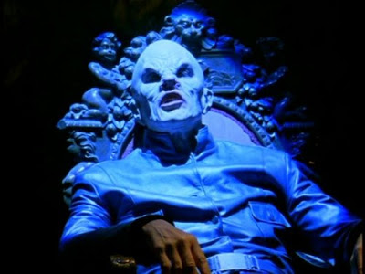
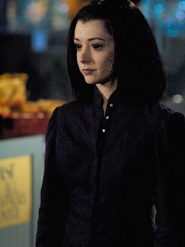

Mestre
 Poderoso vampiro, líder da [Ordem de Aurelius]. O Mestre era tão antigo que já havia perdido as feições humanas completamente, tendo uma aparência mais demoníaca que os vampiros mais "jovens". Em 1930, ele chega em Sunnydale com o propósito de abrir a Boca do Inferno; no entanto, sua primeira tentativa (em 1937) falha devido a um terremoto e ele fica preso nos esgotos da cidade. Somente 60 anos depois em 1997 o vampiro consegue se libertar e tenta pela segunda vez abrir a Boca do Inferno. Como sendo o primeiro vilão da série, não emplacou tanto como iria, pois na maior parte do tempo ficava preso em sua caverna e tinha um falatorio longo e desnecessário, dando espaço para seus comparsas: Darla, vampira e principal serva do Mestre e foi a que transformou Angel num vampiro e O Ungido, uma criança-vampiro que levaria a Caçadora pela mão em direção a sua morte.
Angelus
Quando era um humano, era um mal-carater que sempre gastava dinheiro em noitadas com bebidas com os amigos e as prostitutas da cidade para o desgosto de sua familia e em uma noite conheceu Darla, sua amante vampira que o transformou e assim nascia Angelus, um vampiro vazio de qualquer sentimento humano que mata sem piedade. Após isso, ele matou sua familia e depois fugiu com Darla, Drusilla e Spike, mas acabou amaldiçoado com uma alma por um clã de ciganos, tornando-se bom e muda seu nome para Angel. Vários seculos depois adormecido por conta desta alma, Buffy transa com Angel e ele perde ela, pois esta é a consequencia caso tenha um momento de pura felicidade e assim Angelus volta a ativa e passa a perseguir e machucar Buffy, Xander, Willow e Cordélia e torturar Giles e pretende ressucitar um antigo demônio, Acatla, que tem a capacidade de engolir e causar um apocalipse.
Prefeito Wilkins
 Prefeito de Sunnydale desde a sua fundação, ele tinha mais de 100 anos. Extendendo sua vida e mantendo-se jovem por meio de magia, ele fazia com que a população acreditasse que diferentes gerações da família Wilkins governavam a cidade; seu segredo foi descoberto por Willow e Oz. Wilkins tentou tirar Buffy de seu caminho, mandando o vampiro Mr. Trick atrás dela; porém, ele acabou morto por Faith e esta passou a trabalhar para o Prefeito, desenvolvendo com ele uma relação de pai e filha. Seu objetivo era realizar uma raríssima cerimônia chamada Ascenção com o propósito de se transformar em puro demônio
Prefeito de Sunnydale desde a sua fundação, ele tinha mais de 100 anos. Extendendo sua vida e mantendo-se jovem por meio de magia, ele fazia com que a população acreditasse que diferentes gerações da família Wilkins governavam a cidade; seu segredo foi descoberto por Willow e Oz. Wilkins tentou tirar Buffy de seu caminho, mandando o vampiro Mr. Trick atrás dela; porém, ele acabou morto por Faith e esta passou a trabalhar para o Prefeito, desenvolvendo com ele uma relação de pai e filha. Seu objetivo era realizar uma raríssima cerimônia chamada Ascenção com o propósito de se transformar em puro demônio

Adam
Uma mistura de Homem, Demonio e Maquina, o grande vilão da 4° temporada, Adam, era um soldado que trabalhava na Iniciativa e foi gravemente ferido enquanto caçava vampiros, perdendo parte do rosto, um braço e muita pele e a professora Maggie Walsh o usou para a criação do "Soldado Perfeito" (projeto secreto da sala 314), ficando com a aparencia descrita no inicio. ao ser ativado, Adam no entanto mata Maggie e foge das instalações da iniciativa com o unico proposito de matar seres-humanos. Seu objetivo era capturar o maior numero de demonios possiveis para a iniciativa, matar todos os cientistas e militares e com os corpos (de humanos e demonios) criar um exercito de soldados como ele. e como cumplice possui Spike só pra tirar Buffy e a Scooby Gang de seu caminho, pois de qualquer maneira ela entraria em seu caminho.
Gloria
É uma deusa que, junto com outros dois deuses, governava uma dimensão infernal até que se tornou poderosa demais e foi banida para a Terra, condenada a viver presa no corpo de um menino recém-nascido chamado Ben. Como a identidade do bebê não foi descoberta, Gloria não pode ser destruída por aqueles que sabiam que a ela foi mandada para o nosso mundo. Porém, após Ben completar 20 anos, Gloria começa a ter o poder de se manifestar, por breves períodos, e inícia sua busca pela Chave, para com ela abrir o caminho de volta para sua dimensão infernal, porém isso também trará o caos para o universo. Mas a Chave foi transformada em uma menina por 3 monges e mandada na forma de uma irmã para Buffy que deve protege-la da Deusa e é ai que o destino de Gloria cruza com o da Caçadora
Dark Willow
 Após um acontecimento tragico, Willow, sai furiosa a caminho da loja de Giles em busca de poder. Absorvendo os livros de magia que ela estudava, acaba dando vida a seu lado ruim com o nome "Dark Willow" movido a odio e pura sede de vingança. Inicialmente tem como objetivo matar o responsavel pela tentativa de assassinato a Buffy e também pela morte de Tara: Warren Mears e seus outros dois comparsas, Andrew e Jonathan. Seus amigos não concordam que ela mate Andrew e Jonathan por serem inocentes e os protegem dela e ao mesmo tempo tentam fazer com que ela pare com tudo de ruim que está fazendo pois estão preocupados em relação de como isso irá acabar e ela então se volta contra todos eles e tenta concluir seu objetivo nem que pra isso ela precise matar também seus amigos.

Caleb
Antes de chegar a Sunnydale: matou diversas meninas, explodiu a sede do conselho de sentinelas, matou uma familia de monges que o acolheu deixando um vivo e reuniu mensageiros para perseguirem e matarem as Caçadoras em potencial que migravam pra Sunnydale para formar o exercito que Buffy estava preparando para a grande batalha contra o "Primeiro mal". Caleb é um servo do Primeiro Mal, que o escolheu pelo fato dele ser um serial killer e ao chegar na cidade, se instala num vinhedo e ordena que os mensageiros cavem o chão do local a procura da Foice, arma que só as Caça-vampiros podiam usar. Ele ao que parece é um misogeno, ja que demonstra ódio pelas mulheres.